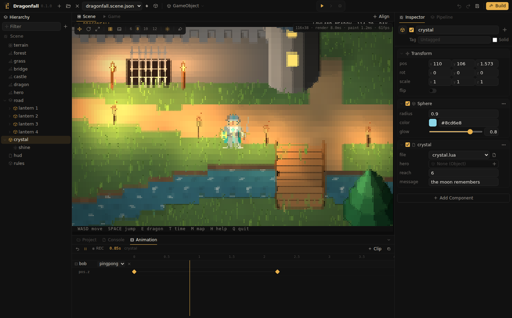
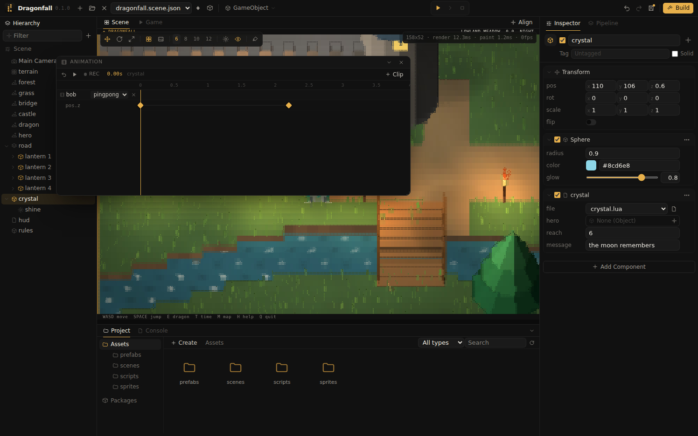

Guides
Animation
Any property you can edit in the Inspector can be animated. Clips are sampled from scene time, so scrubbing is exact and playback never drifts.

Concepts
- A clip belongs to an object and has a play mode:
once,looporpingpong. - A track animates one property, such as
pos.z,colororglow. Numbers, vectors and colors blend smoothly; switches change at the key. - A key is a value at a time, with an ease toward the next key:
linear,in,out,inout,step,backorelastic.
Tutorial: a floating lantern
- Select a lantern and open the Animation tab (Ctrl+6).
- Press REC. While it is red, every change you make in the Inspector becomes a key at the playhead.
- Click the ruler at 0 to move the playhead there, then nudge
posz to 0. A clip appears with its first key. - Click the ruler at 1.5 and set
posz to 2. - Press REC again to stop recording, and press the play button in the Animation tab to preview. Switch the clip to
pingpongso it bobs up and down. - Click a key to select it and pick an ease, for example
inout. Drag keys sideways to retime them; they snap to 0.05 seconds. The trash button deletes the selected key.
Without RECHover a property in the Inspector and click the diamond at the end of its row to key just that property. Double click a track lane to add a key at that time.
A window of its own
Press the float button at the right of the Animation header to turn it into a window you can move and resize over the view. The editor remembers where you left it. The arrow in its title bar docks it back.

Animation from scripts
Scripts can start tweens at runtime, for doors, pickups and UI. They use the same easing and are never saved into the scene.
tween(self, "pos.z", 4, 0.6, "out")